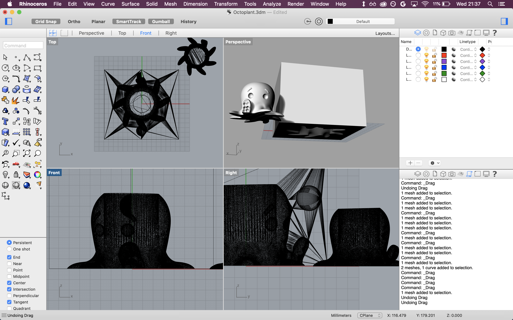

Problem Statement
This assignment involved creating a frame for a mold, a silicone mold, and four identical plaster molded objects. The assignment description was:
Design and fabricate a mold in silicone. Use the mold to cast at least 4 identical parts (e..g in plaster). Design your master part in CAD first, then design your mold, then design a mold to cast your mold in. So meta! You may fabricate your mold's molds either by CNC milling machinable wax or by 3D printing.
Brainstorming
I knew that this assignment would take a lot of time due to the number of steps involved in creating the final objects. If I tried to make a 3D model on my own, I knew I would have spent too long making something complex or I would have ended up with something simple and uninteresting to me. To avoid either of these outcomes, I found a cute octopus model on Thingiverse. It's really cute.

I wanted to tweak the cute octopus a bit so that it could serve a function beyond being adorable. I decided to make it into a mini planter by extruding a hole in the middle of its head (body?).
The Digital Part
I decided to go back to Rhino for this assignment. I had spent quite a bit of time in it for the lamp assignment and felt comfortable with my ability to create a 3D mold. I imported the octopus STL that I downloaded from Thingiverse. I then made it into a planter by extruding and subtracting a cylinder from its body. It did not look happy about that fact.


My loosely formed plan was to put the octopus in a box, take a boolean difference of box and octopus, and cut the final product in half to get two molds. It was difficult for me to visualize many steps of this assignment without physically modeling or sketching the various components. I chose to mess around in Rhino instead of trying to think through each step in detail. It took a while to get the boolean difference to work because the box was hollow and I initially tried to take the difference of two things that were not touching. I modified the octopus to touch the box on the bottom, a wise decision for the final shape of the Oomoo mold.

I cut the combined shape in half to create two molds at the end. After a lot of thought, I tried to cut the mold where it would be easiest to extract the final plaster from the Oomoo. There were a few nooks, crannies, and tentacles to think about. After cutting the shape, I had neglected to think of two things: 1. the halves of the mold needed protrusions so they would not slip while the plaster was setting and 2. I had successfully modeled the molds but not the 3D printed molds for the molds I needed to create.


I undid the slice, made the box a solid, and placed two spheres on either side of the octopus. I took the boolean differences of the spheres and octopus with the box and redid the slice. This created the insets I needed to prevent the mold slipping against itself.

I then converted the solid into a hollow shape. I removed the top of the box so that I would have a place to pour in the Oomoo.
Once I had my final shape, it was time to 3D print! I exported the files in STL format and loaded them in Slic3r, the software compatible with Prusa 3D printers. Belatedly, I realized I had not extruded the surfaces far enough to make everything thick enough to print. I offset the surfaces in Rhino and re-exported. Everything looked fine when the file was loaded in Slic3r. However, the parts lost a few walls and some of the surfaces were marked as infill instead of solid surfaces when I tried to slice them for printing.

After asking a co-worker for help understanding these errors, I found out that the lost walls were happening due to mesh formatting in Rhino. The co-worker also gave me some good advice to make the mold all one piece to avoid having a seam in the final product. I quickly redid my mold in Rhino to make everything a single piece.
Link to project files: 3dm STL
The Fabrication Part
I purchased the SmoothOn Oomoo kit. I used a few disposable plastic cups for the Oomoo and mixed the parts together with plastic knives. I then poured the mixture into my mold and let it set for a full 24 hours. I knew that my mold was fairly large so I wanted to give it plenty of time to solidify.
One day later, I returned to my mold. It had successfully solidified into an octopus! Unfortunately, it did not want to come out of the 3D printed box. After a lot of unsuccessful jabbing at the edges with more plastic knives and various other long flat tools found around the shop, I accepted the fate of my 3D printed part. I sawed one of the sides off of the box and was able to snap the other three sides off in quick succession. After doing this, the mold came out easily with minimal tearing around the waving tentacle.
I then started to create plaster plantopodes. I bought some plaster of paris and went to work. My first attempt was far too watery, even after drying overnight. Once I figured out the correct consistency of plaster, I was able to create four molds over the course of a day. The first and last molds were the cleanest. One of the plaster parts was slightly watery and contained some air bubbles. Another was slightly crumbly and lost a few tentacles.
Eventually, I ended up with a happy family of plantopodes just waiting to get some succulent hairdos. My cephalopod family is growing rapidly!

Future Work
In the future, I'd love to play around with food-safe molding. It would be fun to mold various creatures out of chocolate. I could even imagine a chocolate plantopus filled with cookie dirt and frosting that looks like leaves. Yum! (Pictured below: chocolate octopus found on Pinterest)